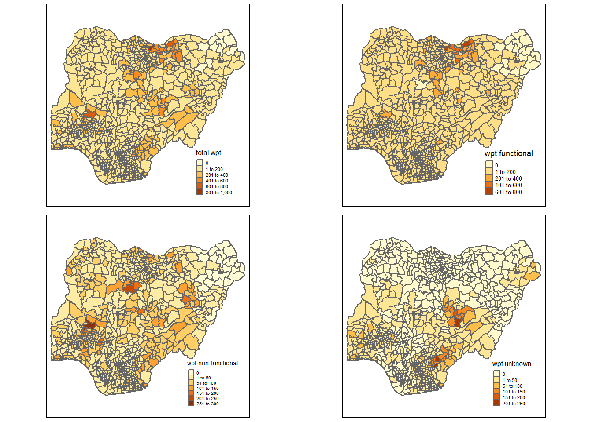

pacman::p_load(sf, tidyverse, tmap, spdep, funModeling)In_class_Ex2
Overview
Getting Started
Setting Up working Environment
Importing data
geo_export
nga_admbnda_adm2_osgof_20190417
Importing water point geospatial data
wp <- st_read(dsn = "geodata",
layer = "geo_export",
crs = 4326) %>%
filter(clean_coun == "Nigeria")Reading layer `geo_export' from data source
`D:\yuetongz\ISSS624\In-class_Ex\In-class_Ex2\geodata' using driver `ESRI Shapefile'Warning: st_crs<- : replacing crs does not reproject data; use st_transform for
thatSimple feature collection with 406566 features and 72 fields
Geometry type: POINT
Dimension: XY
Bounding box: xmin: -92.05073 ymin: -27.31495 xmax: 92.32694 ymax: 26.65622
Geodetic CRS: WGS 84write_rds(wp, "geodata/wp_nga.rds")Importing Nigeria LGA boundary data
nga <- st_read(dsn = "geodata",
layer = "nga_admbnda_adm2_osgof_20190417",
crs = 4326)Reading layer `nga_admbnda_adm2_osgof_20190417' from data source
`D:\yuetongz\ISSS624\In-class_Ex\In-class_Ex2\geodata' using driver `ESRI Shapefile'
Simple feature collection with 774 features and 16 fields
Geometry type: MULTIPOLYGON
Dimension: XY
Bounding box: xmin: 2.668534 ymin: 4.273007 xmax: 14.67882 ymax: 13.89442
Geodetic CRS: WGS 84Data Wranging
Recording NA values into string
wp_nga <- read_rds("geodata/wp_nga.rds") %>%
mutate(status_cle = replace_na(status_cle, "Unknown"))EDA
freq(data=wp_nga,
input = 'status_cle')Warning: The `<scale>` argument of `guides()` cannot be `FALSE`. Use "none" instead as
of ggplot2 3.3.4.
ℹ The deprecated feature was likely used in the funModeling package.
Please report the issue at <https://github.com/pablo14/funModeling/issues>.
status_cle frequency percentage cumulative_perc
1 Functional 45883 48.29 48.29
2 Non-Functional 29385 30.93 79.22
3 Unknown 10656 11.22 90.44
4 Functional but needs repair 4579 4.82 95.26
5 Non-Functional due to dry season 2403 2.53 97.79
6 Functional but not in use 1686 1.77 99.56
7 Abandoned/Decommissioned 234 0.25 99.81
8 Abandoned 175 0.18 99.99
9 Non functional due to dry season 7 0.01 100.00Extracting Water Point Data
Extracting functional water point
wpt_functional <- wp_nga %>%
filter(status_cle %in%
c("Functional",
"Functional but not in use",
"Functional but needs repair"))freq(data=wpt_functional,
input = 'status_cle')
status_cle frequency percentage cumulative_perc
1 Functional 45883 87.99 87.99
2 Functional but needs repair 4579 8.78 96.77
3 Functional but not in use 1686 3.23 100.00Extracting non-functional water point
wpt_nonfunctional <- wp_nga %>%
filter(status_cle %in%
c("Abandoned/Decommissioned",
"Abandoned",
"Non-Functional",
"Non functional due to dry season",
"Non-Functional due to dry season"))freq(data=wpt_nonfunctional,
input = 'status_cle')
status_cle frequency percentage cumulative_perc
1 Non-Functional 29385 91.25 91.25
2 Non-Functional due to dry season 2403 7.46 98.71
3 Abandoned/Decommissioned 234 0.73 99.44
4 Abandoned 175 0.54 99.98
5 Non functional due to dry season 7 0.02 100.00Extracting water point with Unknown class
wpt_unknown <- wp_nga %>%
filter(status_cle == "Unknown")Performing Point-in-Polygon Count
nga_wp <- nga %>%
mutate(`total wpt` = lengths(
st_intersects(nga, wp_nga))) %>%
mutate(`wpt functional` = lengths(
st_intersects(nga, wpt_functional))) %>%
mutate(`wpt non-functional` = lengths(
st_intersects(nga, wpt_nonfunctional))) %>%
mutate(`wpt unknown` = lengths(
st_intersects(nga, wpt_unknown)))Saving the Analytical Data Table
nga_wp <- nga_wp %>%
mutate(pct_functional = `wpt functional`/`total wpt`) %>%
mutate(`pct_non-functional` = `wpt non-functional`/`total wpt`) %>%
select(3:4, 9:10, 18:23)Save the sf data table into rds format
write_rds(nga_wp, "geodata/nga_wp.rds")Visualising the spatial distribution of water points
nga_wp <- read_rds("geodata/nga_wp.rds")
total <- qtm(nga_wp, "total wpt")+
tm_layout(legend.height=0.25,
legend.width=0.35)
wp_functional <- qtm(nga_wp, "wpt functional")+
tm_layout(legend.height=0.25,
legend.width=0.35)
wp_nonfunctional <- qtm(nga_wp, "wpt non-functional")+
tm_layout(legend.height=0.25,
legend.width=0.35)
unknown <- qtm(nga_wp, "wpt unknown")+
tm_layout(legend.height=0.25,
legend.width=0.35)
tmap_arrange(total, wp_functional, wp_nonfunctional, unknown, asp=1, ncol=2)